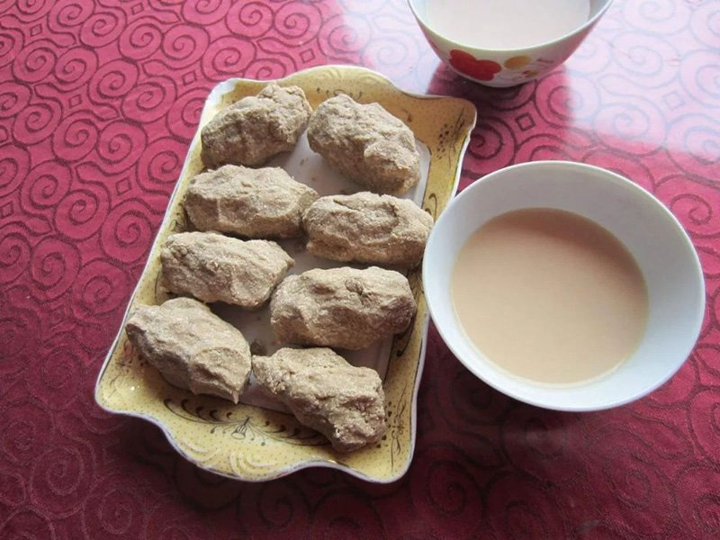

Tsampa

Description
Tsampa is made from roasted barley. Tsampa is a Tibetan staple food. The most common way to eat tsampa is to mix it by hand with butter tea.
Ingredients
- 4 cups of dried pearled barley
- butter
Steps
- Wash the barley thoroughly with water. Drain off the water.
- Spread it out on a flat surface and let it dry.
- Once it is mostly dry, you are ready to roast.
- Heat sand on high on the stove.
- Pour barley on top of the heated sand and roast the barley, shaking it together with the sand in the pan.
- Sift out the sand from the roasted barley using a sifter.
- Repeat the sifting process 3 to 4 times to properly sift out the sand from the roasted barley.
- Grind the clean roasted barley.
If you don't want to go through the process of making Tsampa, try your luck finding some readymade being sold at Tibetan shop or restaurant.